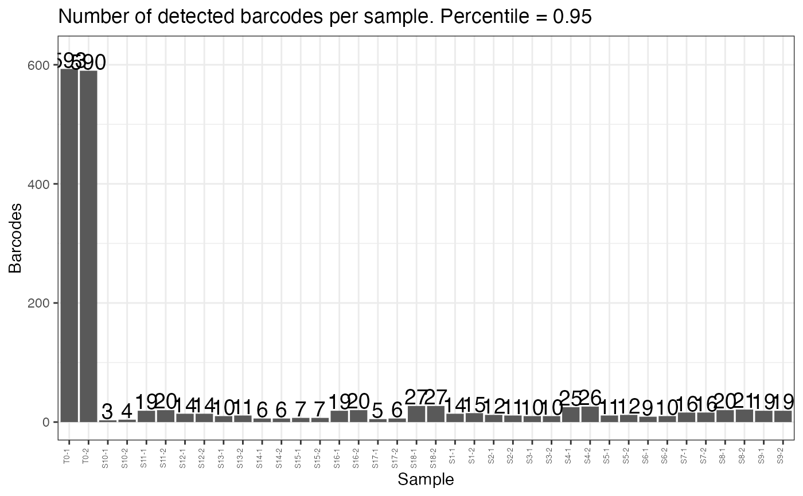

plotDetectedBarcodes
plotDetectedBarcodes.RdPlot the total number of barcodes detected in a sample
Usage
plotDetectedBarcodes(
counts,
percentile = 0.95,
plot = T,
sample.order = NULL,
group = NULL,
title = NULL
)Arguments
- counts
DGEList or dataframe containing raw or normalised barcode counts
- percentile
desired percentile value. 95th percentile by default
- plot
Logical. plot data instead of returning counts table.
- sample.order
desired ordering of the samples on the plot
- group
grouping field in dgelist$samples to color samples by
- title
desired plot title
Examples
plotDetectedBarcodes(test.dge, percentile = .95)
#> Warning: Use of `percentile.df$Sample` is discouraged.
#> ℹ Use `Sample` instead.
#> Warning: Use of `percentile.df$Barcodes` is discouraged.
#> ℹ Use `Barcodes` instead.
#> Warning: Use of `percentile.df$Barcodes` is discouraged.
#> ℹ Use `Barcodes` instead.
#> Warning: Use of `percentile.df$Barcodes` is discouraged.
#> ℹ Use `Barcodes` instead.
#> Warning: Use of `percentile.df$Sample` is discouraged.
#> ℹ Use `Sample` instead.

plotDetectedBarcodes(test.dge, plot = FALSE)
#> Sample Barcodes
#> 1 T0-1 593
#> 2 T0-2 590
#> 3 S10-1 3
#> 4 S10-2 4
#> 5 S11-1 19
#> 6 S11-2 20
#> 7 S12-1 14
#> 8 S12-2 14
#> 9 S13-1 10
#> 10 S13-2 11
#> 11 S14-1 6
#> 12 S14-2 6
#> 13 S15-1 7
#> 14 S15-2 7
#> 15 S16-1 19
#> 16 S16-2 20
#> 17 S17-1 5
#> 18 S17-2 6
#> 19 S18-1 27
#> 20 S18-2 27
#> 21 S1-1 14
#> 22 S1-2 15
#> 23 S2-1 12
#> 24 S2-2 11
#> 25 S3-1 10
#> 26 S3-2 10
#> 27 S4-1 25
#> 28 S4-2 26
#> 29 S5-1 11
#> 30 S5-2 12
#> 31 S6-1 9
#> 32 S6-2 10
#> 33 S7-1 16
#> 34 S7-2 16
#> 35 S8-1 20
#> 36 S8-2 21
#> 37 S9-1 19
#> 38 S9-2 19